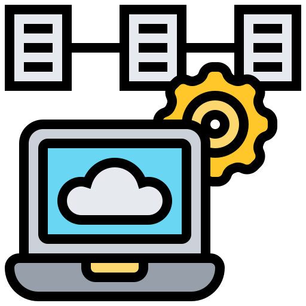

<ion-header>
  <ion-toolbar>
    <ion-title>dam1</ion-title>
    <ion-buttons slot="start">
      <ion-back-button defaultHref="inicio"></ion-back-button>
    </ion-buttons>
  </ion-toolbar>
</ion-header>

<ion-content>
  <ion-list>
    <ion-item>
      <ion-avatar>
        
      </ion-avatar>
      <ion-label> Programación</ion-label>
      <ion-checkbox slot="end" [(ngModel)]="check1" ></ion-checkbox>
    </ion-item>
    <ion-item>
      <ion-avatar>
        
      </ion-avatar>
      <ion-label>Bases de datos</ion-label>
      <ion-checkbox slot="end" [(ngModel)]="check2" (click)="presentToast()"></ion-checkbox>
    </ion-item>
    <ion-item>
      <ion-avatar>
        
      </ion-avatar>
      <ion-label>Entornos de desarrollo</ion-label>
      <ion-checkbox slot="end" [(ngModel)]="check3"></ion-checkbox>
    </ion-item>
    <ion-item>
      <ion-avatar>
        
      </ion-avatar>
      <ion-label>Sistemas Informáticos</ion-label>
      <ion-checkbox slot="end" [(ngModel)]="check4"></ion-checkbox>
    </ion-item>
    <ion-item>
      <ion-avatar>
        
      </ion-avatar>
      <ion-label>Lenguaje de marcas</ion-label>
      <ion-checkbox slot="end" [(ngModel)]="check5"></ion-checkbox>
    </ion-item>
  </ion-list>
</ion-content>
